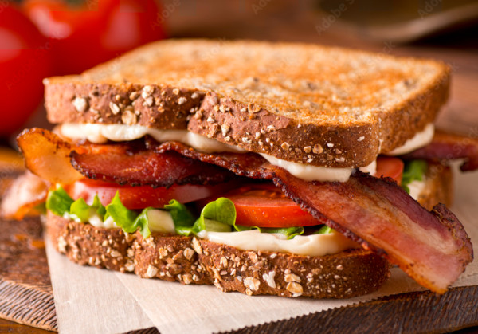

Bacon Lettuce and Tomato
Bacon Lettuce and Tomato

Cant go wrong with bacon
This sandwitch is crispy crunchy and savory. What more can you want?
Ingredients
- Bacon
- Lettuce
- Tomato
- Bread
- Mayonnaise
Steps
- Place bacon in the frying pan at a high heat
- When the bacon is crisp grab the tongs and put the bacon on a plate
- Wash the lettuce and tomato
- Cut the desired amount of tomato in to slices
- Cut the desired amount of lettuce
- Take two slices of bread and apply the desired amount of mayonaise
- Now that the bacon is cooled place the lettuce, tomato and bacon on to the bread and close like a book
- Enjoy your memoir